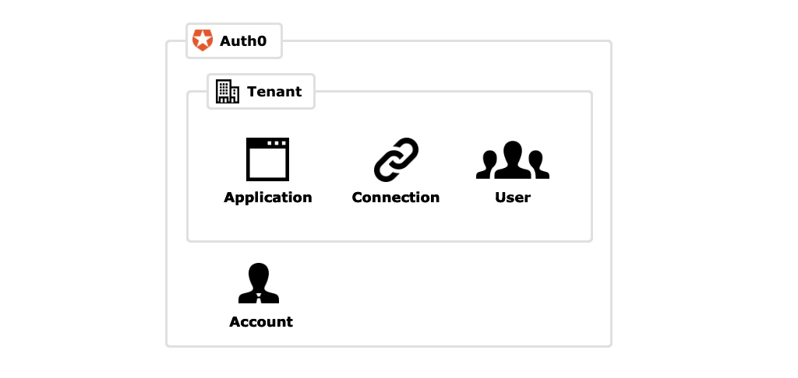
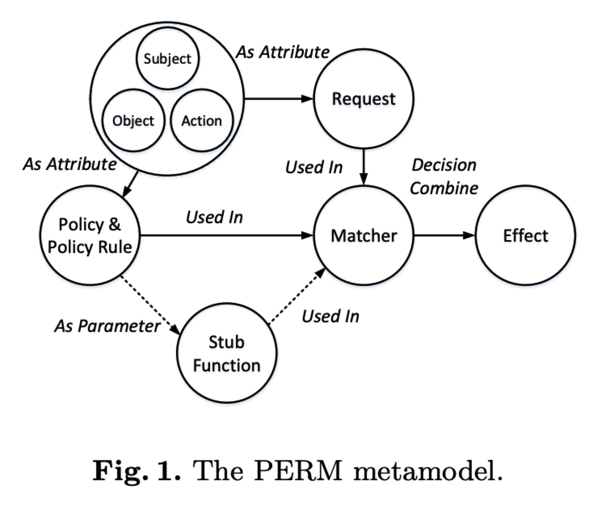

多租户权限管理技术实践

目录
Casbin是一个强大的、高效的开源访问控制框架，其权限管理机制支持多种访问控制模型。Restrict is an authorization library that provides a hybrid of RBAC and ABAC models, allowing to define simple role-based policies while using more fine-grained control when needed. 本文总结了基于这两种技术实现角色授权管理的基本过程和相应实践方法。

Casbin
Casbin是一个国产开源项目，专注于解决Go语言中的权限管理问题。Casbin由北京大学罗杨博士在2017年4月发起，罗杨博士的研究方向为云计算访问控制，目前已发表数十篇相关学术论文，曾经在ICWS、IEEE CLOUD、ICICS等多个顶级学术会议进行论文宣讲。Casbin项目则是其研究成果的落地。目前经过一年多的发展，Casbin在GitHub上已经2500+ stars，已成为Go语言Access Control领域排名第一的项目。

基本特性
- 支持自定义请求的格式，默认的请求格式为{subject, object, action}
- 支持RBAC中的多层角色继承，不止主体可以有角色，资源也可以具有角色
- 支持内置的超级用户 例如：root 或 administrator。超级用户可以执行任何操作而无需显式的权限声明
- 要新建一个Casbin执行器，你必须提供一个Model和一个Adapter
- 基本请求是一个元组对象，至少需要主题(访问实体)、对象(访问资源) 和动作(访问方式)
- 如果未定义eft (policy result)，则策略文件中的结果字段将不会被读取， 和匹配的策略结果将默认被允许
- 对于 ABAC，您在可以在 Casbin golang 版本中尝试 in 操作
- 就像Linux系统的root一样，用户被授权为 root, 我们就有访问所有文件和设置的权限
- 与 policy 不同，model 只能加载，不能保存。
- 一些adapter支持过滤策略管理。 这意味着Casbin加载的策略是基于给定过滤器的存储策略的子集
规范
- Model CONF 至少应包含四个部分:
- [request_definition]
- [policy_definition]
- [policy_effect]
- [matchers]
- 如果 model 使用 RBAC, 还需要添加[role_definition]部分。
- [matchers] 是策略匹配程序的定义。匹配程序是表达式。它定义了如何根据请求评估策略规则。您可以在匹配器中使用诸如 +, -, *, / 和逻辑操作员，例如 &&, ||, !
- 如果您需要多个策略定义或多个匹配器，您可以使用 p2, m2。 事实上，以上四个部分都可以使用多个类型，语法是 r+number 。 例如 r2, e2。 默认情况下，这四个部分应对应一个。 如您的 r2 只能使用匹配器 m2 匹配策略 p2。您可以通过 EnforceContext 作为 的第一个参数来执行 方法来指定类型
- 你甚至可以在Matcher中指定函数，使它更强大。 你可以使用内置函数，或者指定你自己的函数。
- Casbin 支持 RBAC 系统的多个实例, 例如, 用户可以具有角色及其继承关系, 资源也可以具有角色及其继承关系。 这两个 RBAC 系统不会互相干扰。 例如，g 是一个 RBAC系统, g2 是另一个 RBAC 系统。 _, _表示角色继承关系的前项和后项，即前项继承后项角色的权限。 一般来讲，如果您需要进行角色和用户的绑定，直接使用g 即可。 当您需要表示角色（或者组）与用户和资源的绑定关系时，可以使用g 和 g2 这样的表现形式
- 对于Casbin中的内置角色管理器, 可以指定最大层次结构级别。 默认值为10。
- 通过使用模式匹配，特别是在一些比较复杂的环境中有很多的域以及我们需要考虑很多物体的时候，我们可以更简洁高效地实现 policy_definition
ABAC
- ABAC是 基于属性的访问控制，可以使用主体、客体或动作的属性，而不是字符串本身来控制访问
- 在ABAC中，可以使用struct(或基于编程语言的类实例) 而不是字符串来表示模型元素
- 要使用ABAC，您需要做两件事：
- 在模型匹配器中指定属性。
- 将元素的结构或类实例作为Casbin的Enforce() 的参数传入。
- 目前，仅有形如r.sub, r.obj, r.act 等请求元素支持ABAC
- 我们可以选择在策略中添加规则代替在模型中添加规则。 这是通过引入一个 eval() 功能结构完成的
API
- RoleManager提供接口来定义管理角色的操作。 添加匹配函数到角色管理器允许在角色名称和域中使用通配符。
- Casbin.js提供了一个完美的解决方案来将您的前端访问控制管理和后端Casbin服务一体化。
Casbin 应用
- 充分考虑subject, object, action所代表的的含义
- 充分考虑所要解决的问题
管理型授权（菜单管理）
v: view
c: config
[request_definition]
r = sub, dom, obj, act // 用户(角色)，租客，菜单，操作(v/c)
[policy_definition]
p = sub, dom, obj, act // 用户(角色)，租客，菜单，权限(v/c)
[role_definition]
g = _, _, _ // 用户，角色，租客（门店）
[policy_effect]
e = some(where (p.eft == allow)) // 授权条件
[matchers]
m = g(r.sub, p.sub, r.dom) && r.dom == p.dom && r.obj == p.obj && r.act == p.act // 匹配条件
Restrict
Restrict is an authorization library that provides a hybrid of RBAC and ABAC models, allowing to define simple role-based policies while using more fine-grained control when needed. It helps you keep enforcing your access policies away from the business logic, and express them in a convenient way.
基本概念
- Subject - an entity that wants to perform some actions. Needs to implement Subject interface and provide unique role name. Subject is usually any kind of user or client in your domain. 主体，是执行操作的主语，通常是一个domain中的用户
- Resource - an entity that is a target of the actions. Needs to implement Resource interface and provide unique resource name. Resource can be implemented by any entity or object in your domain. 客体，是操作的对象。通常是一个domain中的资源。
- Action - an arbitrary operation that can be performed on given Resource. 操作，是施加在客体上的动作。
- Context - a map of values containing any additional data needed to validate the access rights. 上下文，是验证权限的相关信息。
- Condition - requirement that needs to be satisfied in order to grant the access. There are couple of built-in Conditions, but any custom Condition can be added, as long as it implements Condition interface. Conditions are the way to express more granular control. 条件，授予相应权限的要求。
Policy
Policy is the description of access rules that should be enforced in given system. It consists of a Roles map, each with a set of Permissions granted per Resource, and Permission presets, that can be reused under various Roles and Resources.
type PolicyDefinition struct {
// PermissionPresets - a map of Permission presets.
PermissionPresets PermissionPresets `json:"permissionPresets,omitempty" yaml:"permissionPresets,omitempty"`
// Roles - collection of Roles used in the domain.
Roles Roles `json:"roles" yaml:"roles"`
}
AccessRequest
AccessRequest is an object describing a question about the access - can Subject perform given Actions on particular Resource.
type AccessRequest struct {
// Subject - subject (typically a user) that wants to perform given Actions.
// Needs to implement Subject interface.
Subject Subject
// Resource - resource that given Subject wants to interact with.
// Needs to implement Resource interface.
Resource Resource
// Actions - list of operations Subject wants to perform on given Resource.
Actions []string
// Context - map of any additional values needed while checking the access.
Context Context
// SkipConditions - allows to skip Conditions while checking the access.
SkipConditions bool
}
AccessManager
AccessManager is responsible for the actual validation. Once set up with proper PolicyManager instance, you can use its Authorize method in order to check given AccessRequest. Authorize returns an error if access is not granted, and nil otherwise (meaning there is no error and the access is granted).
Conditions
Conditions allows to define more specific access control. It’s similar to ABAC model, where more than just associated role needs to be validated in order to grant the access. For example, a Subject can only update the Resource if it was created by it. Such a requirement can be expressed with Restrict as a Condition. If the Condition is not satsfied, access will not be granted, even if Subject does have the required Role.
type Permission struct {
// Action that will be allowed to perform if the Permission is granted, and Conditions
// are satisfied.
Action string `json:"action,omitempty" yaml:"action,omitempty"`
// Conditions that need to be satisfied in order to allow the subject perform given Action.
Conditions Conditions `json:"conditions,omitempty" yaml:"conditions,omitempty"`
// Preset allows to extend Permission defined in PolicyDefinition.
Preset string `json:"preset,omitempty" yaml:"preset,omitempty"`
}
总结
Casbin更像一个内存权限(ACL）表，Restrict更像一个内存权限检测规则引擎。两者都可以实现RBAC/ABAC权限模型，都支持角色继承。相对来说，Casbin开发更加简单，但是Restrict授权粒度更细和授权方式更加灵活。
- Casbin适用于简单的资源数量相对固定的RBAC授权管理（例如菜单、按钮等等），相对成熟
- Restrict适用于资源数量不确定的较为复杂的ABAC授权管理（例如数据范围、多因素、环境多变授权等等），技术实现相对较弱，需要进一步扩展（例如多角色校验、多条件检验、多容器管理接口扩展等等）
参考文献
- https://casbin.org/docs/zh-CN/overview
- 一种基于元模型的访问控制策略描述语言，软件学报，2020-31(2)
- https://medium.com/wesionary-team/understanding-casbin-with-different-access-control-model-configurations-faebc60f6da5
- https://blog.gmem.cc/casbin
- https://blog.haojunyu.com/post/authority_rbac/
- https://zhuanlan.zhihu.com/p/63769951
- https://zhuanlan.zhihu.com/p/87009472
- https://blog.csdn.net/peihexian/article/details/92798040
- https://www.cnblogs.com/yjf512/p/12200206.html
- https://studygolang.com/articles/12323
- https://docs.microsoft.com/en-us/azure/azure-sql/database/saas-tenancy-app-design-patterns
- https://terminal.im/blog/GraphQL_with_Casbin_RBAC_with_domain_field_level
- https://python.iitter.com/other/134908.html
- https://casbin.org/docs/zh-CN/rbac-with-domains
- https://medium.com/silo-blog/designing-a-flexible-permissions-system-with-casbin-f5d97fef17b8
- https://www.programmersought.com/article/22987896234/
- https://habr.com/ru/company/custis/blog/248649/
- https://github.com/el-mike/restrict